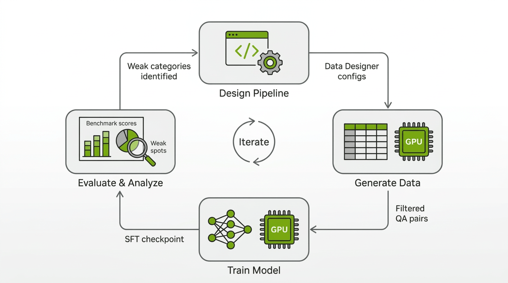
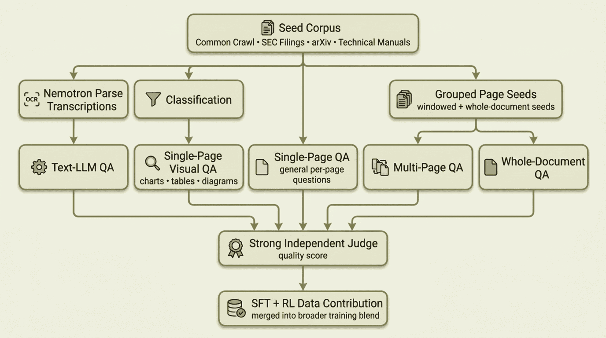
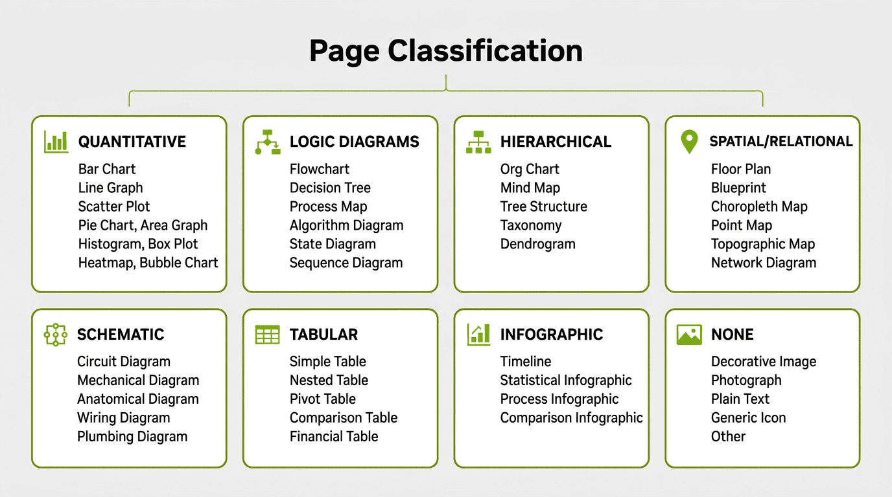

Training a VLM to Understand Long Documents: An Iterative SDG Story
How do you teach a VLM to read charts, cross-reference tables, and reason over 100+ page PDFs? We generated ~11.4M synthetic visual question-answer pairs (~45B tokens, including questions, answers, thinking traces, and vision tokens) with NeMo Data Designer to improve long-document visual reasoning in a multimodal model. We used MMLongBench-Doc as our main evaluation target throughout the project, tracking both overall progress and the specific document-reasoning capabilities the model was still missing. In this post, we cover what worked and what didn't.
MMLongBench-Doc tests whether a VLM can answer questions about long, multi-page PDF documents — the kind with tables, charts, diagrams, and dense text spread across dozens of pages. The benchmark is hard because it requires genuine visual reasoning: reading bar charts, counting elements in diagrams, synthesizing evidence from tables, charts, and text spread across dozens of pages, and knowing when a question simply can't be answered from the available content.
Our starting point was an early version of Nemotron-3-Nano-Omni-30B-A3B, a multimodal model that responded "Unanswerable" to almost everything on this benchmark. The score: 26%. We needed training data that would teach the model to actually look at documents and reason about what it sees.
Here's how we got there.
The Approach: Iterative Pipeline Development
Rather than designing one pipeline and generating millions of rows, we worked in phases. Each phase produced a new SDG pipeline, a new batch of training data, and a new round of evaluation and failure analysis that showed which document-reasoning capabilities were still missing. The tight feedback loop between SDG pipeline changes and training results was essential.

To keep our iterations fast, we measured the usefulness of our generated data in SFT and RL training runs that used primarily our generated data and a small amount of other data sources. We also experimented with different training configs such as sequence length and different strategies for representing multiple Q&A for the same document. In parallel, we ran bigger experiments with more complete datamixes to make sure our improvements would carry over to the final Nemotron-3-Nano-Omni-30B-A3B training recipe.
The final training blend drew from four data-generation streams — an OCR-based text pipeline, a classification-filtered visual QA pipeline targeting charts, tables, and diagrams, a general single-page QA pipeline, and multi-page / whole-document QA pipelines — all filtered by a strong independent judge before contributing to the SFT dataset. Each stream is described in the phases below.

The rest of this post walks through the work in order: first the seed data we collected, then each pipeline phase in sequence, followed by the infrastructure lessons and what we learned along the way.
Note
Unless explicitly noted otherwise, the scores below come from experimental development runs rather than the final released model. The data generated through this effort was incorporated into the final training blend for the released Nemotron-3-Nano-Omni-30B-A3B model.
Seed Data: Building the Document Corpus
Every SDG pipeline needs source material. Ours was a growing corpus of real PDF documents, rendered as page images with one row per page. As training results revealed gaps, we expanded the corpus to cover the missing document types and reasoning modes.
-
Common Crawl PDFs were the starting point. We filtered a large collection of web-crawled PDFs to medium- and long-form documents where cross-page reasoning and long-context visual understanding matter most, yielding ~8.2 million page images. Common Crawl gave us breadth: reports, presentations, manuals, forms, and everything else that ends up on the public web.
-
SEC filings came next. We added 10K filings and other financial documents in late January '26 to expand coverage of dense tables, cross-referenced numerical data, and long-form financial layouts. They were useful, but their extreme page counts also taught us a lesson: squeezing very long documents into fixed context windows reduced image resolution enough to hurt training until we learned to cap extreme page counts and increase sequence length.
-
arXiv papers expanded coverage of scientific figures, equations, multi-panel plots, and citation-heavy layouts. Across multiple random samples from the arXiv 2023 corpus, we generated over 2.4 million page images.
-
Technical manuals and brochures arrived in late February '26 from an internal data acquisition team. This added ~432K English-language in-domain pages rich in diagrams, schematics, and step-by-step procedural layouts — exactly the content types where our model scored lowest.
The benchmark itself contains publicly available documents that may be included in large-scale text pretraining datasets. However, our model's very low initial score suggests the model hasn't memorized the documents or benchmark question and answer pairs. We used heuristics such as document name matching to try to check that we don't inadvertently add benchmark documents to our long-document dataset. Additionally, we audited our generated Q&A and found negligible Q&A overlap with the benchmark; where overlap occurred, the corresponding documents were entirely different.
Regardless of source, each dataset then went through the same preparation pipeline: PDFs were rendered to per-page PNG images, stored on the shared filesystem, and referenced by file path in parquet files. Grouping scripts then produced three seed variants: per-page seeds (one page image per row, for classification and single-page QA), windowed seeds (disjoint sets of 2–8 consecutive pages, with window size scaling by document length, for cross-page QA), and whole-document seeds (all pages of a PDF grouped together for full-document QA). Together, these gave us single-page, multi-page, and whole-document generation from the same source documents.
Phase 1: Getting Data on the Board
We started simple on purpose. The first pipeline split the problem into OCR transcription with Nemotron Parse and question-answer generation from those transcripts with GPT-OSS-120B.
Nemotron Parse produced structured text with bounding boxes and semantic classes such as title, section, caption, tables, and image, and its transcriptions were consistently accurate even on dense layouts with tables, charts, and mixed content:
config.add_column(
dd.LLMTextColumnConfig(
name="raw_ocr_output",
model_alias="ocr", # Nemotron-Parse-v1.1
prompt="", # Nemotron Parse does not require a user prompt
multi_modal_context=[
dd.ImageContext(
column_name="png_path",
data_type=dd.ModalityDataType.URL,
image_format=dd.ImageFormat.PNG,
),
],
drop=True,
)
)
config.add_column(
dd.CustomColumnConfig(
name="transcribed_texts",
generator_function=parse_ocr_output,
)
)
The GPT-OSS stage then generated questions and answers from those transcripts:
class QuestionAnswer(BaseModel):
question: str = Field(..., description="The question to be answered.")
answer: str = Field(..., description="The correct answer to the question.")
config.add_column(
dd.LLMStructuredColumnConfig(
name="question_and_answer",
model_alias="gpt-oss", # GPT-OSS-120B
prompt=QUESTION_ANSWER_PROMPT,
output_format=QuestionAnswer,
)
)
Splitting OCR and QA into separate pipelines meant we only needed to run Nemotron Parse once per seed dataset. After that, we could iterate on QA prompts and generation parameters as many times as needed without re-transcribing. The first large-scale run produced millions of OCR transcriptions across dozens of SLURM jobs, followed by a comparable number of QA pairs.
While we stopped generating new OCR-based QA after Phase 1, we still sampled a subset of the QA generated in this phase to retain in the final training blend.
Result: A modest gain in raw overall accuracy, from around 26% to around 28%. The model stopped answering "Unanswerable" to everything and started producing real answers across all categories. The approach was validated.
Phase 2: Seeing the Document
Text-only QA from OCR misses everything that makes documents visual: the layout of a bar chart, the structure of a flowchart, the spatial relationships in a floor plan. MMLongBench-Doc specifically tests these capabilities. We needed the model generating training data to actually look at the pages.
Our first attempt was to reuse Nemotron Parse's bounding boxes and coarse element tags to scope QA generation. We fed this metadata into both the GPT-OSS text pipeline and the Qwen3-VL visual pipeline, hoping to tell the model which region of the page to focus on. For GPT-OSS, the boxes provided spatial context alongside the OCR transcript. For Qwen3-VL, we asked the model to restrict its visual attention to the specified region.
Neither approach worked well. The bbox labels were too coarse to guide useful QA generation: a table tag doesn't tell you whether the content is a financial table, a comparison table, or a pivot table, and the image tag was even broader. Because the source corpus contained all kinds of images, asking the model to focus only on OCR-tagged image regions surfaced everything from company logos and decorative graphics to data-rich charts and diagrams, which produced many low-value QA pairs. Qwen3-VL also couldn't reliably stay inside the specified bounding box when we tried to enforce the spatial constraint, which further reduced QA quality.
This failure directly motivated what came next: instead of trying to constrain a model's attention to a region, we built a classification stage that examines each page image as a whole and determines what visual elements it actually contains.

Each category maps to specific subcategories — for example, QUANTITATIVE includes bar charts, line graphs, scatter plots, pie charts, area graphs, histograms, box plots, heatmaps, and bubble charts. TABULAR distinguishes simple tables from nested, pivot, comparison, and financial tables. The NONE category catches decorative images, photographs, plain text blocks, and presentation slides with only bullet points.
The classification prompt instructs the model to score reasoning complexity on a 1–10 scale: high complexity (8–10) requires multi-step inference like cross-referencing data sources or conditional logic chains, medium (4–7) requires single-step analysis like direct comparisons, and low (1–3) covers simple lookups.
class PageClassification(BaseModel):
contains_reasoning_content: bool
primary_categories: list[VisualElementCategory]
subcategories: list[VisualElementSubcategory]
reasoning_complexity_score: int
justification: str
config.add_column(
dd.LLMStructuredColumnConfig(
name="page_classification",
model_alias="qwen-vl", # Qwen3-VL-30B-A3B
prompt=CLASSIFICATION_PROMPT,
output_format=PageClassification,
multi_modal_context=[
dd.ImageContext(
column_name="png_path",
data_type=dd.ModalityDataType.URL,
image_format=dd.ImageFormat.PNG,
)
],
)
)
The taxonomy covers 8 primary categories with 45 subcategories. Running classification over our Common Crawl corpus revealed how much of the data actually contained visual reasoning content:
72% of pages were plain text, decorative images, or content without reasoning potential. This filtering step was critical: the expensive QA generation stage only ran on the pages where visual reasoning questions were actually possible.
The QA stage then used the classification to guide question generation. The prompt instructs the model to focus on the specific visual element type identified:
config.add_column(
dd.LLMStructuredColumnConfig(
name="question",
model_alias="qwen-vl-instruct", # Qwen3-VL-235B-A22B-Instruct-FP8
prompt=QUESTION_PROMPT,
output_format=Question,
multi_modal_context=[
dd.ImageContext(
column_name="png_path",
data_type=dd.ModalityDataType.URL,
image_format=dd.ImageFormat.PNG,
)
],
)
)
Result: Training with the visual QA data pushed the score to 37% — an +11 point improvement over the 26% baseline. The model was learning to read charts and tables.
Phase 3: Thinking Models and Prompt Engineering
The jump from Phase 2 to Phase 3 was driven by two observations from the training results: the model was getting questions wrong that it should have gotten right, and many of the generated questions were either too complex or too trivial.
We made three changes simultaneously:
1. Always use a strong thinking model. We moved to Qwen3-VL-235B-A22B-Thinking, which generates an internal chain-of-thought before producing its answer. While smaller models are faster to run, bigger and stronger models are often qualitatively better at data generation. Data Designer captures the reasoning trace separately via the extract_reasoning_content=True flag.
2. Dropped structured output for free-form text. The Phase 2 pipeline used LLMStructuredColumnConfig with Pydantic schemas for questions and answers. This guaranteed parseable output but constrained the model's generation. When we inspected the thinking traces from the structured output runs, the chain-of-thought was polluted with JSON formatting: the model was spending reasoning tokens figuring out how to fit its answer into the schema rather than reasoning about the document. We switched every column to LLMTextColumnConfig.
3. Rewrote every prompt. Based on what we observed in the data produced by Phase 2, we added more instructions and guardrails. The question prompt nearly doubled in length. The key additions include:
-
Complexity targeting: Questions should require at least one step of reasoning — not direct lookup. Also, we explicitly listed anti-patterns to avoid such as ambiguous questions.
-
Verifiability checklist: Before outputting a question, the model must ask itself: "Can I answer this by looking at the visual? Can I verify if an answer is correct? Is there a clear, unambiguous correct answer?"
-
Tolerance for correctness: The answer correctness judge was updated to accept ±5% for numerical answers and equivalent formats ("25%" = "0.25" = "1/4"). The Phase 2 judge was too strict, marking correct answers as wrong over minor formatting differences.
config.add_column(
dd.LLMTextColumnConfig(
name="answer",
model_alias="qwen-vl-thinking", # Qwen3-VL-235B-A22B-Thinking-FP8
prompt=ANSWER_PROMPT,
extract_reasoning_content=True,
multi_modal_context=[...],
)
)
Result: These changes pushed the score to 39%. The thinking model and prompt improvements were additive — better questions, better answers, and cleaner reasoning traces all contributed.
Phase 4: Targeting Weak Spots
Phase 3 improved overall accuracy, but the per-category breakdown revealed persistent gaps. Image, chart, and layout categories were still lagging behind text, and multi-page reasoning remained the weakest overall at just 17%. The model was also saying "Not answerable" too often for questions where the answer was clearly present in the document.
We reduced the share of unanswerable Q&A we sampled and added explicit guidance to the answer prompt to reduce unnecessary refusals, encouraging the model to attempt an answer before concluding something was unanswerable.
Multi-page QA was the other major addition in this phase. Real-world document understanding often requires reasoning across multiple pages — "What is the total revenue across all quarterly reports?" can't be answered from a single page.
Our first attempt used disjoint windows of consecutive pages (2 pages for short documents up to 8 pages for long ones), requiring cross-page reasoning within each window. We started with windows rather than full documents to make generation faster. Windows were a practical starting point, but they had a ceiling: a model that only sees 4 pages at a time can't generate questions like "how many appendices are in this document?" The real breakthrough came when we switched to a whole-document approach using Qwen3.5-397B-A17B, a newer and larger model in the Qwen family, feeding all pages of a PDF to the model at once and asking it to generate questions that genuinely require the entire document.
config.add_column(
dd.LLMTextColumnConfig(
name="question",
model_alias="qwen3p5-vl", # Qwen3.5-397B-A17B-FP8
prompt=WHOLE_DOC_PROMPT,
multi_modal_context=[
dd.ImageContext(
column_name="png_paths", # all pages of the document
data_type=dd.ModalityDataType.URL,
image_format=dd.ImageFormat.PNG,
)
],
)
)
The whole-document prompt was informed by failure analysis of our model on long-document QA. It emphasized capabilities the model was still weak at: counting and aggregation across pages, extracting complete lists from repeated layouts, cross-page computation, and lookup chains that require evidence from multiple sections of a document. The prompt included question-type-specific templates for in-context learning and required the generator to verify that each question genuinely depended on evidence spread across more than one page.
Result: Whole-document QA produced the first strong gains on cross-page reasoning. After SFT with the combined data: 53%, with the multi-page subcategory jumping from 26% to 44%.
Phase 5: Quality at Scale
By this point we had broad coverage of the main document-reasoning modes we cared about. The final phase focused on improving the quality, correctness, and training signal of the data we already had.
Improved reasoning traces. We found that the shape of our model's reasoning traces wasn't well structured. We improved the quality of the generated reasoning traces by prompting the data generation model to think in a structured and stepwise fashion. As an example, for questions spanning the whole document, we first want the model to scan pages and find content relevant to the question. By contrast, without the scanning phase, our model stopped sometimes too early when it found the first relevant evidence.
High quality filtering. We used a strong independent judge to score a sample of generated QA pairs across five rubrics, with weights tuned to what matters most for training. The model's role was strictly as a filter — it flagged low-quality pairs for removal, but none of its outputs (scores, explanations) were included in the SFT training data. This filtering step dropped about 10% of our samples:
FINAL_SCORE_WEIGHTS = {
"Answer Correctness": 0.35,
"Training Signal Strength": 0.30,
"Question Quality": 0.15,
"Visual Grounding": 0.10,
"Format Compliance": 0.10,
}
config.add_column(
dd.LLMJudgeColumnConfig(
name="qa_quality_judge",
model_alias="strong-judge-vlm",
prompt=JUDGE_PROMPT,
scores=[
answer_correctness_score,
question_quality_score,
visual_grounding_score,
format_compliance_score,
training_signal_score,
],
multi_modal_context=[
dd.ImageContext(
column_name="png_base64",
data_type=dd.ModalityDataType.BASE64,
image_format=dd.ImageFormat.PNG,
)
],
)
)
config.add_column(
dd.CustomColumnConfig(
name="weighted_quality_score",
generator_function=compute_weighted_score,
)
)
Using a different model family for evaluation and data generation provides independent quality assessment. The heaviest weight goes to Answer Correctness (0.35) because wrong answers poison training, followed by Training Signal Strength (0.30) because multi-page reasoning was one of the weakest remaining capabilities we needed the data to strengthen.
Result: Best SFT score of 55.7%.
RL on top of SFT
SFT got the model reading documents, but the error analysis showed two persistent issues: the model was often confidently wrong about what it saw, and it refused too quickly when the evidence was actually there. RL was partly about fixing those specific failures, but what surprised us was how much the rest of the benchmark moved along with them.
We ran GRPO on the best SFT checkpoint. The single-page rollouts came mostly from MMPR, where the answers are numbers, short lists, or multiple-choice and score cleanly against ground truth, which is why online RL with automatic scoring made more sense than a preference-based approach like MPO. For the harder multi-page cases we used an online LLM judge in place of string matching. The biggest improvements landed on the visual categories, which had been the SFT model's weakest areas.
Unanswerable data as a hard negative. We generated "unanswerable" training examples by swapping the image in existing VQA pairs, drawing from 15+ source datasets at zero annotation cost. Mixed into the rollouts at 5–7%, these image-question mismatches reduced hallucinations on unanswerable questions as expected. The surprise was that they also improved accuracy on answerable questions, especially on image, layout, and text. Our best guess is a combination of language-bias mitigation (forcing the model to actually look at the image rather than guess from the question), a hard-negative effect on image-text alignment, and a learned evidence-checking behavior.
GRPO over-reinforcing refusal. "Not answerable" is a short, near-constant output, and GRPO is happy to over-reinforce it once it becomes a viable response in the rollout pool. Mid-training we saw overall accuracy peak, dip as the model leaned too hard on refusal, and then recover as other categories caught up. Without dense evaluation we would have missed this shape entirely, and the eventual fix was a wider plateau rather than earlier stopping.
Multi-page remains the largest gap, and the reason is the verifier rather than the RL algorithm or the compute budget. Our single-page gains rode on MMPR's clean answer formats. The multi-page data we built from MMLongBench-style sources has free-form string answers, where rule-based scoring fails on negations, numerical tolerances, and phrasing variants. The online LLM judge gets around this, but calibrating the judge well enough to train against reliably is now the gating step.
Result: Overall accuracy moved from 55.7% to 59.0%.
Infrastructure and Scale
Every pipeline in this project ran on SLURM clusters with NVIDIA A100, H100, and B200 GPUs. We used an internal wrapper tool to orchestrate Data Designer jobs on the cluster — each job booted vLLM servers hosting the generation models and ran a Data Designer client alongside them. Large runs were sharded across many SLURM jobs, each processing a partition of the seed dataset.
Beyond the basic setup, running this at scale broke things we didn't expect. Here are the problems that cost us the most time:
File paths over base64. Our first attempt embedded base64-encoded page images directly in the seed parquet files. This made each row enormous and caused DuckDB (which Data Designer uses for dataset loading) to stall for 10+ minutes per job as it globbed across millions of rows. The fix was simple but transformative: store file paths in the parquet and use vLLM's --allowed-local-media-path flag to let the inference server read images directly from the shared filesystem. Dataset loading went from minutes to seconds.
Scaling throughput. We used tensor parallelism to fit models of different sizes (TP=2 for the 30B classification model, TP=4 for the 235B, TP=8 for the 397B QA models), with data-parallel replication to run multiple vLLM server instances per node and fill remaining GPUs. Early runs with the 397B and 235B models in FP16 were slow, so we switched to FP8 quantized versions — a significant speedup with no noticeable quality loss.
Benchmarking tool. Each generation job involved a different model, quantization level, and parallelism configuration, and we had limited ways to predict how long a full run would take before committing hundreds of GPU-hours to it. We built an internal benchmarking tool that ran short profiling jobs to measure throughput (requests/min) and latency distributions for each configuration. This let us estimate wall-clock time, catch configuration issues early, and choose the right parallelism settings before launching at scale.
What We Learned
Classification-first filtering saves everything downstream. Running a cheap classification model (Qwen3-VL-30B-A3B) over all pages before expensive QA generation filtered out 72% of pages that had no visual reasoning potential. This saved enormous compute on the QA stage and improved data quality since every generated question targeted actual visual content.
Structured output schemas leak into thinking traces. When we used LLMStructuredColumnConfig with Pydantic schemas, the thinking models' reasoning traces were contaminated with JSON structures — the model would "think" in JSON rather than natural language. Switching to LLMTextColumnConfig with extract_reasoning_content=True gave us clean reasoning traces and better questions and answers.
Multi-page and whole-document reasoning was the missing capability. Single-page QA drove steady improvements, but progress plateaued until we added multi-page and whole-document data. Questions requiring reasoning across an entire document — "What is the total across these three quarterly tables?" or "How many appendices are in this document?" — were the training signal the model was missing.
Independent evaluation catches what self-evaluation misses. Using the same model to generate and judge QA pairs (Qwen judging Qwen) has blind spots. Bringing in another strong VLM as an independent judge caught quality issues that self-evaluation missed, and the filtered data produced measurably better training results.
Bounding-box scoping didn't help QA generation. We tried using bbox annotations to scope QA generation to specific page regions, but the downstream QA model couldn't leverage the spatial information effectively. This held for both text-only and visual pipelines (see Phase 2), and directly motivated the classification-first approach that worked.
Results
Evaluation on MMLongBench-Doc
The table below summarizes performance on MMLongBench-Doc at key checkpoints, including overall accuracy and the per-category breakdown. Baseline refers to the early Nemotron-3-Nano-Omni-30B-A3B checkpoint we started from:
| Category | Baseline | Jan 14 | Jan 23 | Jan 29 | Feb 6 | Feb 9 | Mar 12 | Mar 25 | Mar 26 (+RL) |
|---|---|---|---|---|---|---|---|---|---|
| overall accuracy | 26.32 | 27.73 | 36.95 | 39.06 | 45.41 | 46.98 | 53.22 | 55.68 | 59.00 |
| text | 30.37 | 33.85 | 35.16 | 35.75 | 39.92 | 44.22 | 51.36 | 54.72 | 57.38 |
| layout | 25.48 | .3150 | 29.02 | 33.95 | 34.73 | 37.62 | 50.62 | 54.90 | 58.28 |
| table | 21.00 | .2634 | 23.91 | 28.56 | 37.94 | 41.75 | 55.30 | 57.13 | 58.73 |
| chart | 23.73 | .3005 | 30.36 | 35.26 | 35.99 | 35.27 | 45.94 | 44.71 | 50.85 |
| image | 23.42 | .2733 | 25.52 | 3.221 | 35.06 | 38.56 | 47.27 | 52.42 | 55.27 |
| single-page | 35.66 | 41.91 | 42.42 | 47.98 | 50.79 | 53.77 | 58.49 | 61.18 | 64.88 |
| multi-page | 14.49 | 18.41 | 15.40 | 17.06 | 23.65 | 25.57 | 43.94 | 47.22 | 48.41 |
| unanswerable | 25.20 | 13.41 | 57.72 | 53.65 | 66.66 | 64.93 | 56.40 | 57.21 | 62.90 |
A few things stand out. Multi-page was the hardest category to move — it sat at 14–18% for weeks until the whole-document QA pipeline landed in Phase 4, when it jumped to 44% (a 3x improvement over baseline). Table showed a strong response to visual QA data, going from 21% to 55%. Unanswerable spiked early (the model learned to stop refusing everything) and stayed high.
By Mar 12, the model matched or exceeded Qwen3-Omni-30B in every category of the MMLongBench-Doc benchmark. After RL, the final score reached 59%, closing much of the gap to larger reference models on this benchmark:
Impact on Other Benchmarks
The synthetic data we generated was blended into the model's broader training recipe alongside other document-understanding and visual-reasoning data. Throughout the project, we tracked impact on other vision benchmarks and found that the data produced positive lift beyond MMLongBench-Doc. The visual reasoning skills developed for chart reading, table understanding, and cross-page reasoning generalized well. Refer to the Nemotron-3-Nano-Omni technical report for final results across the full evaluation suite.
Upstream Contributions: Features Born from This Project
One of the most valuable outcomes of this project was the set of features and fixes it drove back into Data Designer itself. When you push a framework to its limits on a real workload — millions of multimodal records across hundreds of SLURM jobs — you find the gaps fast. Every issue we hit became a PR that benefits all Data Designer users.
- Multi-image support & images-before-text ordering (#257) — list-of-images columns for multi-page VLM prompts, with image contexts placed before text for better VLM quality
- Non-LLM concurrency controls (#242) — user-tunable parallelism for plugin-based generators
- Early shutdown fixes (#201, #203) — race condition and incomplete disable flag under high error rates
- RunConfig overhaul (#186, #208, #209) — fine-grained shutdown, retry, and buffer controls
- LLM text response deserialization fix (#233) — preserve mixed-type text responses as-is
- Seed dataset partitioning (#8) —
PartitionBlockandIndexRangestrategies for splitting work across SLURM jobs - Wildcard seed paths (#12) — glob support for consuming partitioned parquet output
These span the full stack — config, engine, interface, integrations — and collectively made Data Designer viable for production-scale multimodal SDG.
The Compound Effect
No single pipeline got us from 26% to 59% — a 2.3× lift. Each iteration broke something, revealed a gap, or overturned an assumption. The bbox approach failed, so we built a classification taxonomy. Single-page QA plateaued, so we added multi-page. Self-evaluation had blind spots, so we brought in a different model family as judge. The progress came from shortening the loop between data generation, training, evaluation, and failure analysis so we could identify missing capabilities and address them quickly.
As noted at the top of this post, the scores above reflect our experimental development runs. The data generated through this effort was incorporated into the final training blend for the released Nemotron-3-Nano-Omni-30B-A3B model, which achieves 57.5% overall accuracy on MMLongBench-Doc. For the full details on the model, training recipe, and complete benchmark results, see the Nemotron-3-Nano-Omni technical report.
Try For Yourself
The recipes below are the self-contained, runnable scripts for each stage of the pipeline described in this post. They are ordered to match the pipeline flow — run them in sequence, feeding the output of each stage as seed data to the next.
Key Resources: